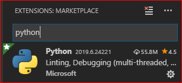
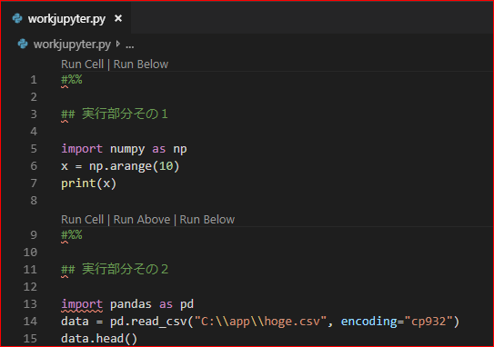
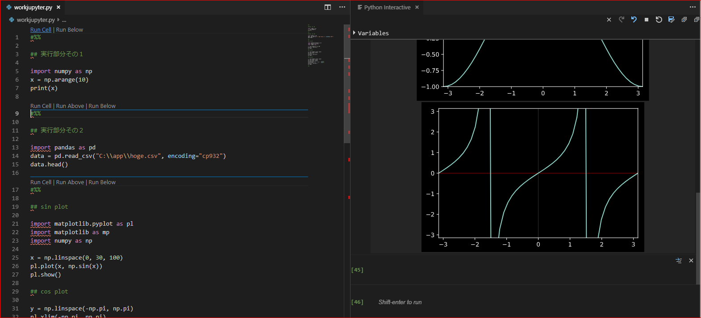

Jupyter NotebookをVisual Studio Codeで実行する
はじめに
Visual Studio Code（以下、vscode）ではDockerでPythonやVue.jsの開発環境を構築したり、あるいはMarkdownで書いたドキュメントを配布用にPDF変換したりと、今までいろいろやってきました。今度はJupyter Notebookを動かします。いやー、vscodeってホントに多彩ですね。
なお、今回においてはDockerを利用せず、単純にローカル環境でJupyterを使用します。
Jupyter Notebookとは
Jupyter Notebook (なお、読み方は「ジュパイター・ノートブック」、または「ジュピター・ノートブック」。自分は「ジュピター」って言ってますが、どっちが一般的なんですかね？) とは、ブラウザ上で実行するデータ分析作業のためのツールです。特徴的なのは、実行結果を記録しながらプログラミングができる点です。ここでブラウザから実行できます。
プログラムそのものを記述しつつ、Markdownを利用して各種テキストや図表も同時に書き込んでいくことが可能です。つまり、プログラムのソースとその実行結果が、メモを含めて明確に紐づいた状態で確認できます。そのため、作業内容の振り返りに非常に便利ですし、複数人で作業を行う場合の共有にも有用です。また、Jupyterは*.ipynb形式のファイルで保存しますが、ソースコード部分を*.pyのPythonコードとして出力することも可能ですし、実行結果をPDFやHTML形式で出力できるため、Jupyterの実行環境がなくても内容を共有できます。
そんなJupyterをvscodeで使っちゃえ、というのが今回の趣旨です。
環境
- Windows 10
- Anaconda version 1.7.2
- vscode 1.36
インストール
Anacondaをインストールしている場合、基本的にはJupyterも一緒にインストールされているはずです。なお、Anacondaのインストールは、オフィシャルページからプラットフォームに合ったインストーラーをダウンロードして実行します。インストール後に下記のコマンドを実行すると、condaコマンドにてインストールされているリストが出力されます。表示されたリストの中にjupyterがあればインストール済みであることがわかります。
conda listちなみに、Anacondaを導入しないでJupyterを利用するにはpipを利用します。下記のコマンドを実行するだけです。
pip install jupytervscodeで実行する
拡張機能のインストール
vscodeでJupyterを利用するには、Pythonの拡張機能をインストールする必要があります。
拡張機能をインストールするには、vscodeの左側にあるメニュー中から拡張機能のアイコン（下画像の赤枠内）をクリックします。
検索窓に「python」と入力します。検索結果のうち、「Python」を選択し、インストールします。なお、下画像ではすでにインストール済みのため、歯車のアイコンが表示されています。

他にも導入すると便利な拡張機能はありますが、今回は割愛します。
vscodeでノートブックを書いてみる
まず任意のフォルダを作成します。今回はworkdirとしましたが、フォルダ名はなんでもいいです。次にvscodeで先ほど作成したフォルダを開きます。フォルダを開いたら、適当にファイルを作成します。ただし、この際に作成するファイルの拡張子は*.pyです。先ほどJupyterでは*.ipynb形式を用いると言いましたが、vscodeで実行する場合はPythonの拡張子でファイルを作成します。
「だけど、それじゃあフツーのPythonコードを見分けがつかないじゃん！」と思ったあなたは正しい。つまりファイルの拡張子ではなく、ファイルの中身で見分けるわけです。
ファイルを*.py形式で作成したら、下記のコードを入力してください。なお、「その2」部分はCSVファイルがないとコケちゃうので、適当なCSVファイルを作っておくかコードを削除してください。
#%%
## その１
import numpy as np
x = np.arange(10)
print(x)
#%%
## その２
import pandas as pd
data = pd.read_csv("C:\\app\\hoge.csv", encoding="cp932")
data.head()
#%%
## その3
### sin plot
import matplotlib.pyplot as pl
import matplotlib as mp
import numpy as np
x = np.linspace(0, 30, 100)
pl.plot(x, np.sin(x))
pl.show()
### cos plot
y = np.linspace(-np.pi, np.pi)
pl.xlim(-np.pi, np.pi)
pl.ylim(-1, 1)
pl.plot(y, np.cos(y))
pl.show()
### tan plot
z = np.linspace(-np.pi, np.pi)
pl.xlim(-np.pi, np.pi)
pl.ylim(-np.pi, np.pi)
pl.axhline(0, ls='-', c='r', lw=0.5)
pl.axvline(0, ls='-', c='r', lw=0.5)
pl.plot(z, np.tan(z))
pl.show()何か見慣れない#%%という文字列が含まれていますが、これが普通のPythonコードとJupyterを見分けるコードです。これが「セル」という、Jupyter Notebookにおける区切りを表しています。これで区切られた領域が1つの実行単位です。これをvscode上で記述すると、「Run cell」とか表示されます。このボタンを押下するとセル単位で実行するか、別のセルも一緒くたに実行するかが選べます。
Run cell
押下したセルのみ実行します。
Shift + Enterを押下しても同様の結果が得られます。Run Above
押下したセルの直前セルまで実行します。
Run Below
押下したセルから下のセルをすべて実行します。
ちなみに、下画像で#%%の部分なんかに赤い波線が表示されていますが、これはflake8のlintに引っかかっているためです。ファイルの拡張子が*.pyであるため、flake8が反応しちゃってるようです。「importはモジュールの冒頭に記述しろよぉ」とか言ってるわけですけど、ごめんね、これ*.pyファイルだけどJupyterなのよ_:(´ཀ`」 ∠):_

実行すると、右側に新しいタブで実行結果が表示されます。

なお、基本的にAnacondaをインストールしている場合は上記のコードがそのまま動作すると思います。が、Jupyterをpipでインストールした場合は、必要なパッケージを別途pip installしてください。
まとめ
基本的にJupyterはブラウザ上で気軽にPythonを記述できる便利な環境でしたが、vscodeと組み合わせることでコードの補完機能を利用でき、より一層気軽かつ便利にコードを記述できます。
ますますvscode依存が深まりそうです_:(´ཀ`」 ∠):_